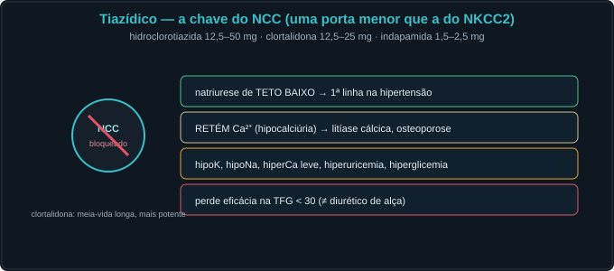
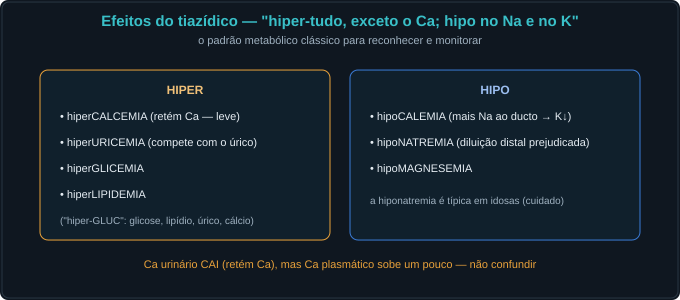
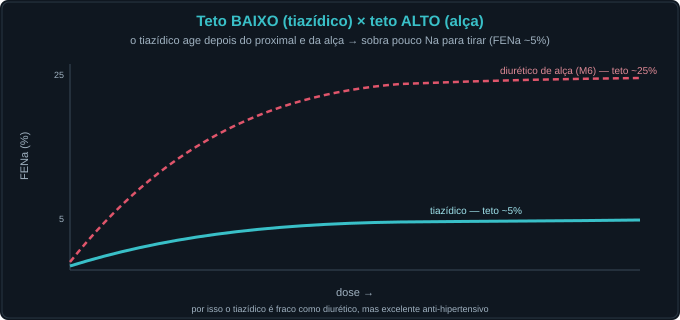
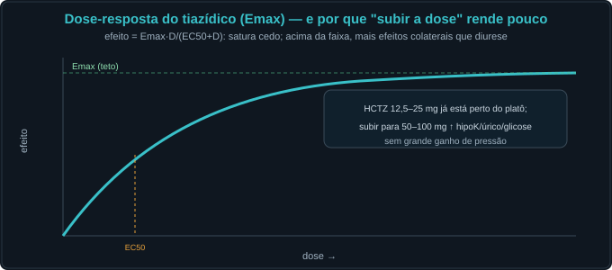
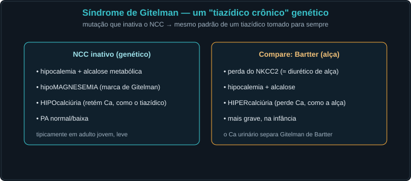

Conceito — o túbulo distal e o tiazídico, ilustrado
O TCD faz o ajuste fino — homeostasia do Na e do Ca. Reabsorve o
último Na pelo NCC e regula o cálcio. As Fig. 1–13 voltam no Caso, na Trilha e na Avaliação (algumas
reaparecem nos exercícios). Atribuição em CREDITS.md (em curadoria).
1. O TCD e o NCC — o "diluidor distal"
O NCC (Na-Cl) reabsorve Na sem água → continua diluindo o filtrado. É a chave do tiazídico. Vem logo após a alça e a mácula densa.



2. O cálcio no TCD e o paradoxo do tiazídico
O Ca²⁺ entra pelo TRPV5 e sai pela troca Na/Ca (NCX). O tiazídico, ao baixar o Na intracelular, faz o NCX puxar mais Ca²⁺ → retém cálcio (hipocalciúria).


3. Os tiazídicos — sítio, efeitos e teto baixo
Diurético fraco (teto baixo), mas ótimo anti-hipertensivo. Padrão metabólico: "hiper-tudo, exceto Ca; hipo no Na e no K".



4. A dose-resposta e a histologia
A curva Emax satura cedo: subir a dose ↑ efeitos colaterais mais que a pressão. E o TCD se reconhece ao microscópio pela luz lisa (sem borda em escova).


5. Quando o NCC falha por genética — Gitelman
A perda hereditária do NCC reproduz o tiazídico crônico: hipoK, hipoMg, hipocalciúria, alcalose, PA normal/baixa.

Caso — oito atos, decida antes de revelar
Mulher, 58 anos, HAS e litíase renal de cálcio recorrente. Vamos tratar pelo TCD.
Trilha socrática — treze perguntas que constroem o conceito
1. O que o NCC faz?
Reabsorve Na e Cl no início do TCD, sem água — o "diluidor distal". É o alvo do tiazídico.
2. Por que o tiazídico tem teto baixo?
Age depois do proximal e da alça; sobra pouco Na para reabsorver → FENa máxima ~5% (vs ~25% do de alça).
3. Como o Ca²⁺ é reabsorvido no TCD?
Entra pelo TRPV5 (apical) e sai pela troca Na/Ca (NCX, basal), que depende do Na intracelular baixo.
4. Qual o paradoxo do cálcio?
O tiazídico bloqueia o NCC → Na intracelular↓ → o NCX puxa mais Ca²⁺ ao sangue → retém Ca (hipocalciúria).
5. Qual o uso clínico desse paradoxo?
Litíase por hipercalciúria e osteoporose (reter Ca). É o oposto do diurético de alça, que perde Ca (usado na hipercalcemia).
6. Por que o tiazídico causa hipocalemia?
Entrega mais Na ao ducto coletor → o ENaC reabsorve → secreta K (M8). Mesma lógica do de alça.
7. E a hiponatremia?
O TCD é o diluidor distal; bloqueá-lo prejudica a diluição máxima → retém água livre → hiponatremia (clássica em idosas).
8. Que outros distúrbios metabólicos?
Hiperuricemia, hiperglicemia, hiperlipidemia, hipomagnesemia. "Hiper-tudo, exceto o Ca; hipo no Na e no K".
9. Por que perde eficácia na TFG baixa?
Precisa ser filtrado/entregue ao TCD; com TFG < 30 quase não funciona — então usa-se diurético de alça.
10. HCTZ × clortalidona × indapamida?
Mesma classe (NCC). Clortalidona é mais potente e de meia-vida longa; indapamida é tiazídico-símile. As doses diferem, o teto não.
11. Por que subir a dose rende pouco?
A curva Emax satura cedo (12,5–25 mg perto do platô); doses maiores ↑ efeitos adversos, não a pressão.
12. O que é a síndrome de Gitelman?
Perda genética do NCC ≈ tiazídico crônico: hipoK, hipoMg, hipocalciúria, alcalose, PA normal/baixa.
13. Em que sentido isto é homeostasia?
O TCD faz o ajuste fino do Na e do Ca; o tiazídico reescreve esse ajuste — e o Ca urinário revela em qual segmento se está atuando.
Instrumento — a curva FENa × dose (teto BAIXO)
Os controles do Lab alimentam esta curva. Note o teto baixo (FENa ~5%, no mesmo eixo do M6, onde o de alça chega a ~25%). Baixe a TFG e veja a curva achatar mais.
Laboratório — o TCD e o tiazídico (dose computada)
| Variável | Atual | Comentário |
|---|---|---|
| Atividade do NCC | — | 100% = sem fármaco |
| FENa (%) | — | teto ~5% (baixo) |
| Ca²⁺ urinário (relativo) | — | tiazídico ↓ (retém) |
| K⁺ plasmático (mmol/L) | — | 3,5–5,0 |
| Na⁺ plasmático (mmol/L) | — | risco de hipoNa |
| Ca²⁺ plasmático (mg/dL) | — | leve ↑ |
| Padrão | — | — |